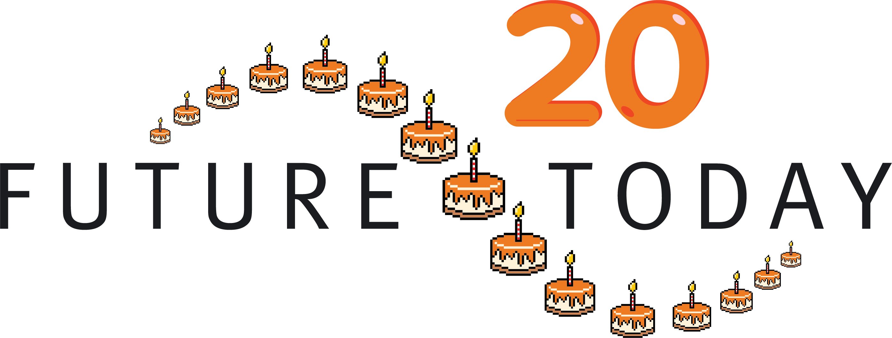
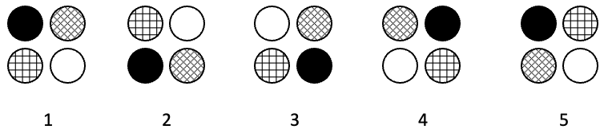
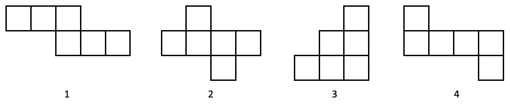
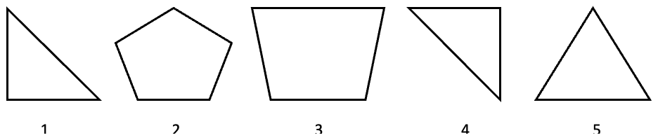
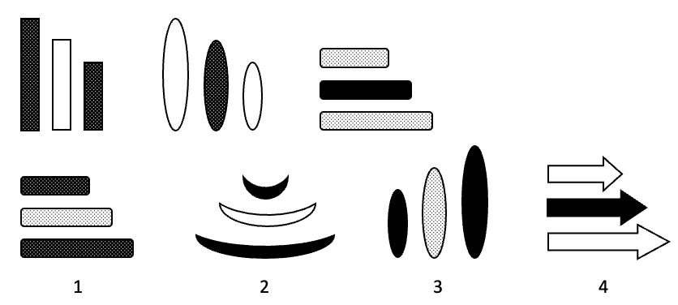

TРБА
КПИРАКС
ТРСАЕС
АТМЬ
НКВЧУА
Garcia I.L. Carcia I.L.
Filder E.K. Fidler E.K.
Wilson V.G. Wilson V.G.
Mitchell O.Y. Mitchell O.Y.
Robinson B.S. Robinzon B.S.
СТАРО (…) НОК
8032384224 8032384224
11971421 11917421
7354256 7354256
898526 898626
42427 42247
3269 3296
2 1/13 0,07 1,1 0,41 17/4
Никогда поздно чем лучше.

ЖИВОТНОЕ (…..) НЕЖНОСТЬ
1) Ведрами ветра не смеряешь.
2) Что посеешь, то и пожнешь.
3) Добрая слава бежит, а худая - летит.
4) За делами дня не видно.
5) Как свистнуло, так и гаркнуло.
6) Заварил кашу - не жалей масла.
99 91 83 ? 67 59
Все ежи - грызуны. Все ежи имеют колючки. Все грызуны имеют колючки.
Тогда заключительное будет:
Витя такого же роста, как Дима. Лера выше Димы. Лера ниже Вити.
Сколько грамм винограда можно купить за 75 копеек? В ответ впиши только целое число. Например: 100.

Ни один учащийся школы не является студентом вуза. Петя Иванов – студент ВУЗа. Петя Иванов – не учащийся школы.

Где тонко — там и рвётся.
Цепь так же крепка как и её самое слабое звено.
ЛЕОР
БЕОРОЙВ
КОВАОРЖОН
ФЕЛИНДЬ
Трава всегда зеленее на другой стороне холма.
Дарёному коню в зубы не смотрят.
1/3 1/6 1/6 1/3 1/6 1/6 1/6 1/3 1/6 1/9 1/6 1/6 1/3
Цыплят по осени считают.
He говори «гоп», пока не перепрыгнешь.
4 9 16 21 36 49
Не спеши языком, торопись делом.
Делу время, потехе час.
